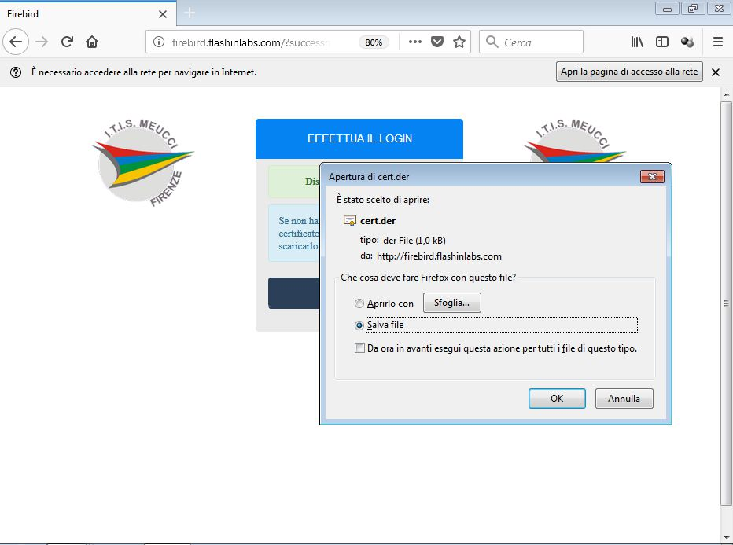
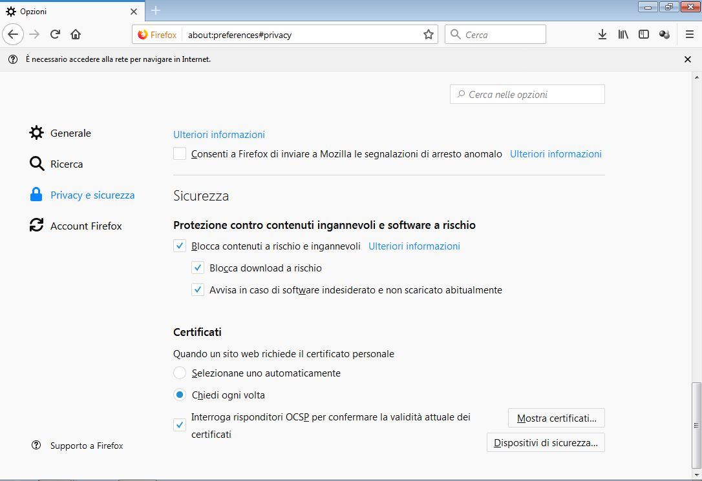
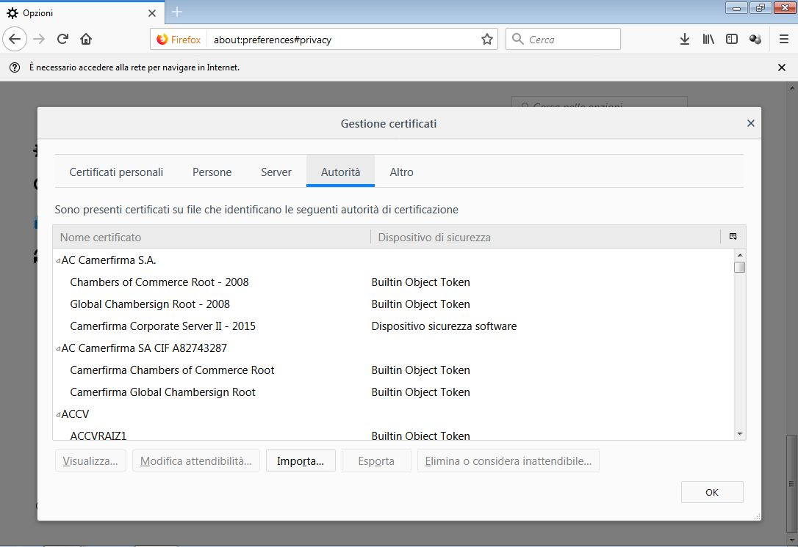

Premere nell’apposito link sulla schermata principale per scaricare il certificato
Dopo aver salvato il file del certificato, è necessario eseguire la vera e propria importazione.
Premere sul menu (in alto a destra, icona composta da 3 linee orizzontali), poi premere su Opzioni (icona Ingranaggio), poi nella parte di sinistra premere su Privacy e Sicurezza (icona Lucchetto).
Scorrere adesso tutta la finestra fino a trovare la sezione “Certificati”; premere il pulsante “Mostra Certificati”
Nella finestra che si aprirà, premere sulla sezione “Autorità”
Premere sul pulsante “Importa”, selezionare il file scaricato e dare OK. Il certificato è ora installato.